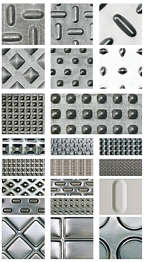
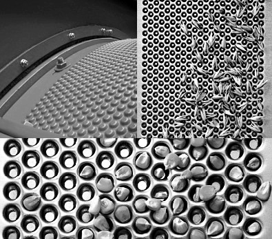
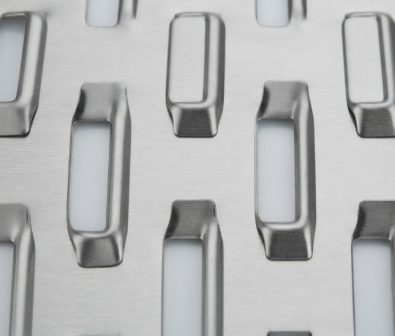
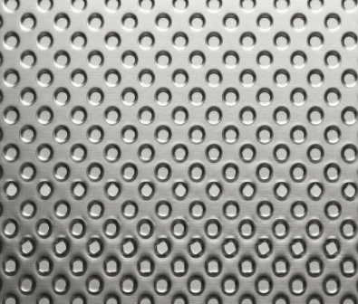
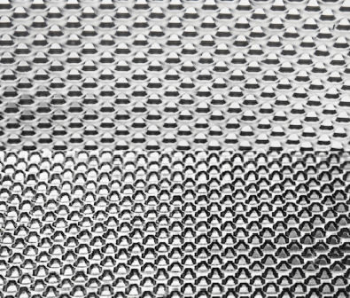
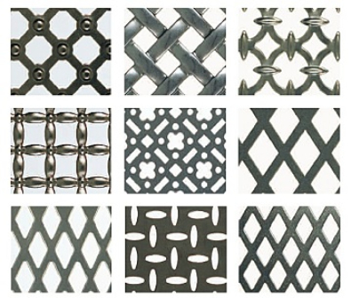
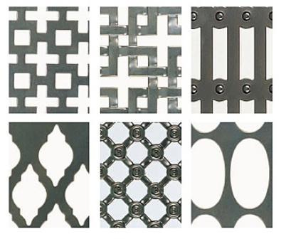
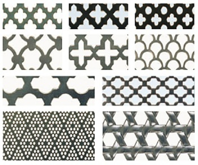
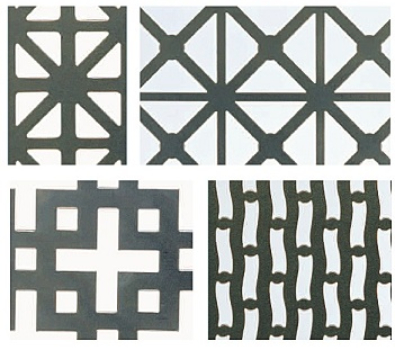
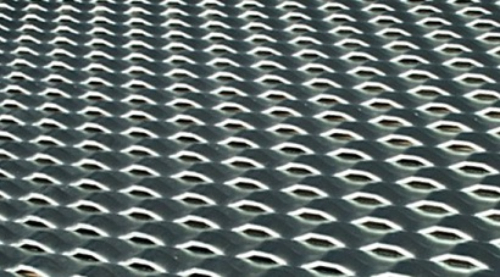

Elevate your sugarcane processing with our comprehensive, end-to-end solution. Designed for maximum efficiency and pristine cleanliness, our advanced grading and separation systems use precision engineering to minimize waste and significantly boost your total output.
Ruggedly built for demanding heavy-duty industrial environments, our advanced purification system thoroughly detects and eliminates unwanted impurities, stones, and heavy metals from bagasse, strictly guaranteeing a flawless, safe, and premium-grade final product that meets the highest standards of quality.

Built to support a sustainable future with a remarkably low carbon footprint and smart resource optimization, our state-of-the-art machines deliver exceptional energy efficiency while drastically cutting down operational waste.
We are committed to keeping your operations running seamlessly around the clock by providing comprehensive customer support, proactive maintenance services, and robust, reliable warranty options you can always depend on.

High-performance cleaning system for impurity removal.

Accurate material separation and precise grading.

Durable screening for heavy-duty industrial tasks.

Removes stones and heavy particles safely.

High-performance cleaning system for impurity removal.

Accurate material separation and precise grading.

Durable screening for heavy-duty industrial tasks.

Removes stones and heavy particles safely.
High-performance cleaning system for impurity removal.

These are specially shaped holes that allow easy exit of particles through the screen, even with small holes in thick material. These screens give a perfect result in the milling process. These can be produced with a thickness many times the hole diameter. It enables control of airflow and sieving. The design and angle of perforation is developed to reduce the possible filling/clogging of the holes.
Perfocon’s are suited for separation processes. However, they have a wide range of other applications from cheese boxes to distributor plates in fluid bed dryers and hammer mill cylinders. Hole sizes are available in stainless steel from 0.15 mm to 1.0 mm and in mild steel from 0.15 mm to 3.0 mm.
These are special perforation which gives a nose-type shape. These are specially needed in the agricultural industry for grain sorting and drying, through special applications to parts for agricultural machinery. Apart from agricultural industry, these are also used in Food and Processing industry for various processes.
At Dinco Industries, we combine decades of craftsmanship with state-of-the-art technology to deliver unmatched industrial wire mesh and perforated screen solutions globally.